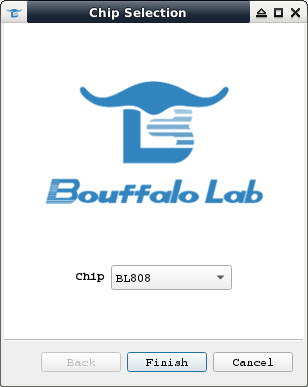
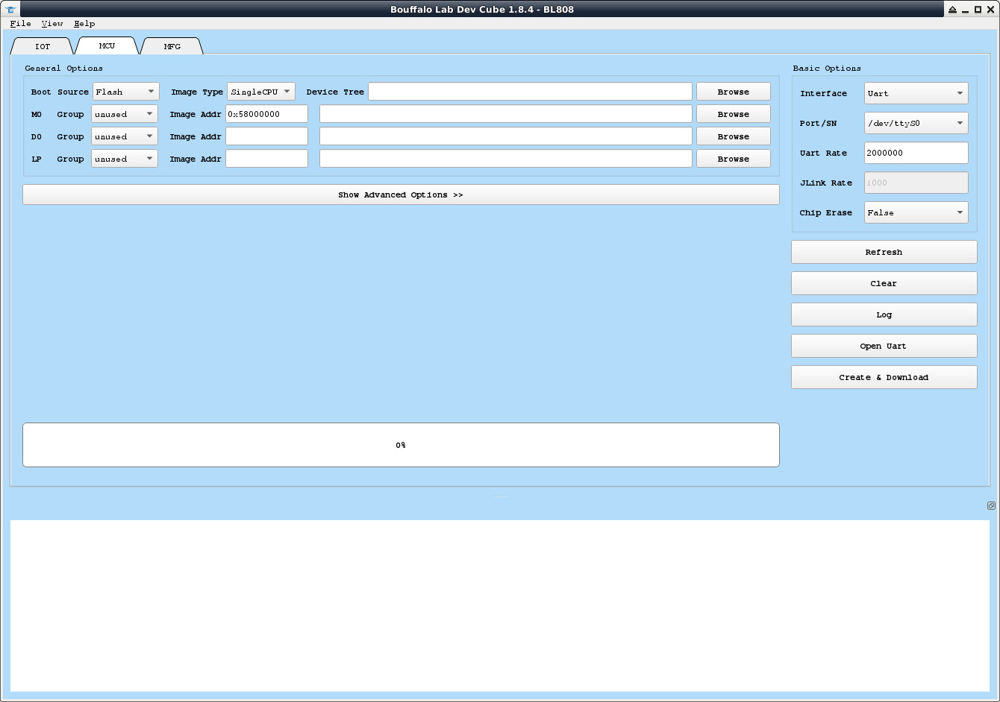

參考資訊：
https://github.com/bouffalolab/bl808_linux
https://wiki.sipeed.com/hardware/en/maix/m1s/m1s_dock.html
$ cd
$ wget https://occ-oss-prod.oss-cn-hangzhou.aliyuncs.com/resource/1663142514282/Xuantie-900-gcc-linux-5.10.4-glibc-x86_64-V2.6.1-20220906.tar.gz
$ tar xvf Xuantie-900-gcc-linux-5.10.4-glibc-x86_64-V2.6.1-20220906.tar.gz
$ sudo mv Xuantie-900-gcc-linux-5.10.4-glibc-x86_64-V2.6.1 /opt/m1s
$ export PATH=/opt/m1s/bin:$PATH
$ riscv64-unknown-linux-gnu-gcc --version
riscv64-unknown-linux-gnu-gcc (Xuantie-900 linux-5.10.4 glibc gcc Toolchain V2.6.1 B-20220906) 10.2.0
Copyright (C) 2020 Free Software Foundation, Inc.
This is free software; see the source for copying conditions. There is NO
warranty; not even for MERCHANTABILITY or FITNESS FOR A PARTICULAR PURPOSE.
博流智能有釋出一個可以在Ubuntu系統下使用的燒錄工具，使用方式如下：
$ cd $ wget https://dev.bouffalolab.com/media/upload/download/BouffaloLabDevCube-v1.8.4.zip $ unzip BouffaloLabDevCube-v1.8.4.zip -d BouffaloLabDevCube-v1.8.4 $ chmod a+x BouffaloLabDevCube-v1.8.4/BLDevCube-ubuntu $ ./BouffaloLabDevCube-v1.8.4/BLDevCube-ubuntu
選擇BL808

